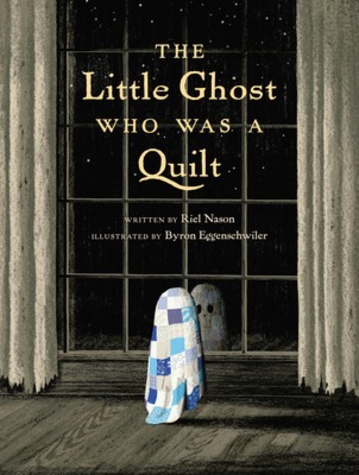
The Little Ghost Who Was a Quilt
This isn’t directly about disability, but it’s one of our favorite books. It’s a beautiful analogy about being different and learning to embrace it. View on Amazon

This isn’t directly about disability, but it’s one of our favorite books. It’s a beautiful analogy about being different and learning to embrace it. View on Amazon
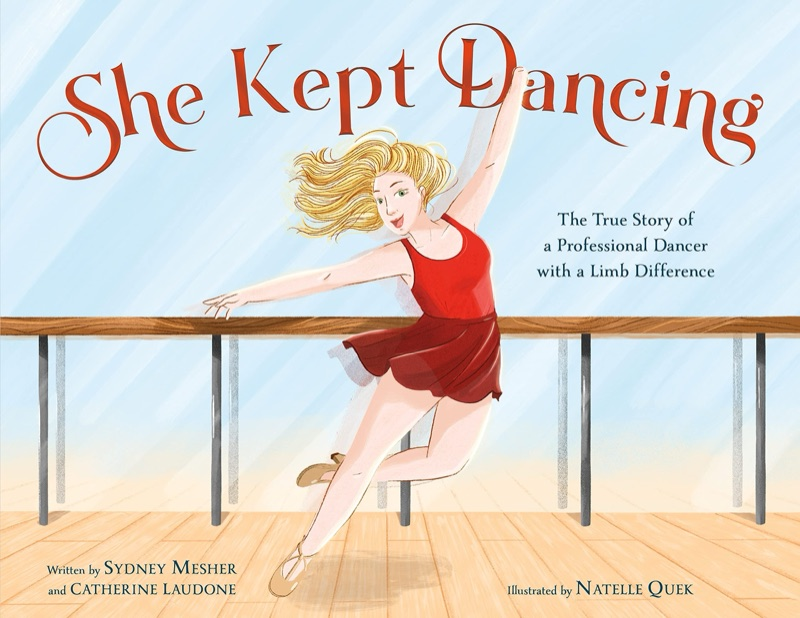
Written by Sydney Mesher, this inspiring true story follows Sydney, who was born missing a hand. Despite facing stares and bullying from other kids because of her limb difference, she loved dancing and kept dancing. Sydney became Radio City's first visibly disabled dancer, breaking barriers in the entertainment industry.
We were fortunate to hear Sydney read this book to Gwen and other kids at Camp HALO, and it was such a powerful moment. The warm and inviting picture book takes young readers along on Sydney's journey through the joyous ups as well as the crushing downs, and tells the story of how through it all, she kept dancing. Sydney is an incredible role model who shows kids that pursuing your dreams and celebrating your individuality can lead to amazing places. View on Macmillan
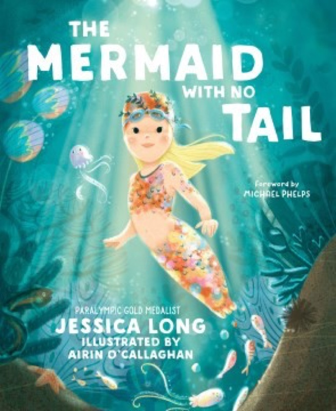
Written by Paralympic gold medalist Jessica Long, this inspiring children's book tells the story of a mermaid who is different from the others, she was born without a tail. Through beautiful illustrations and a heartwarming narrative, the story explores how differences can be sources of strength and uniqueness. It’s a gentle and empowering message for kids with limb differences, from someone who has lived that experience herself. View on Amazon
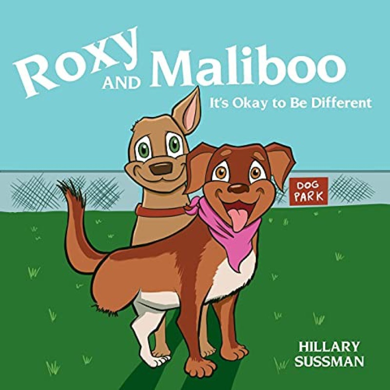
A story about a dog who loses a leg and gains confidence along the way. View on Amazon
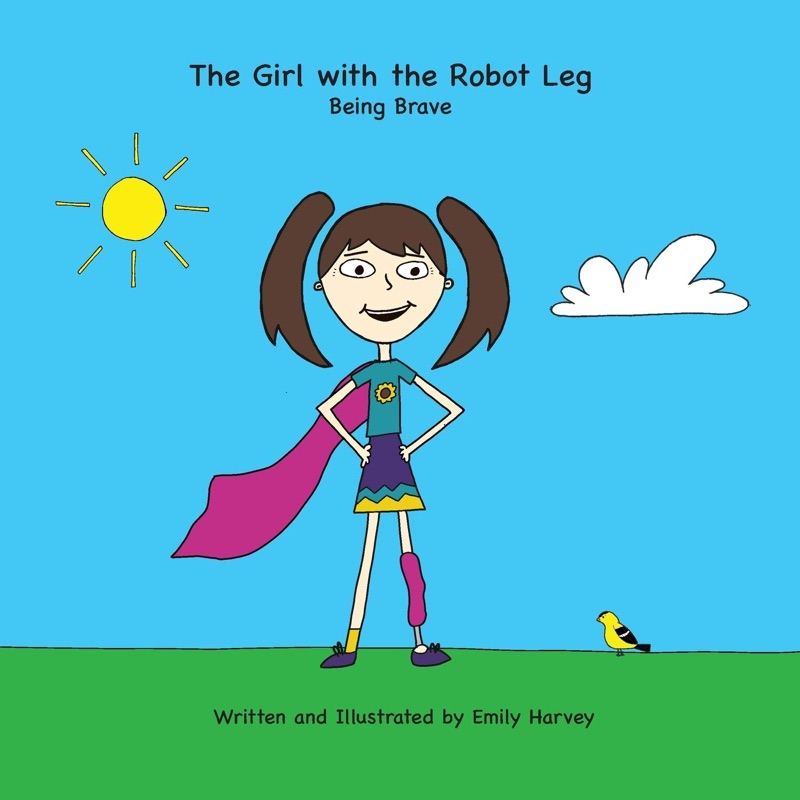
A fun, empowering story about a young girl with a prosthetic leg. There are multiple books in this series. View on Amazon
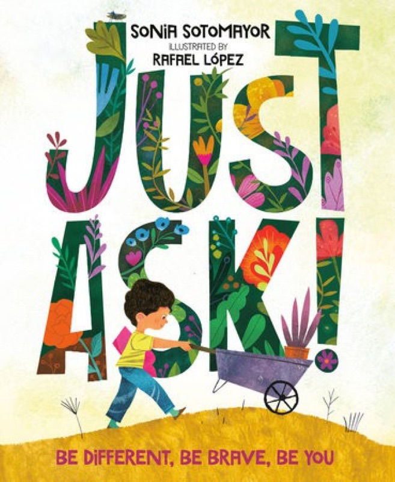
Written by Supreme Court Justice Sonia Sotomayor, this book encourages kids to ask questions and celebrate differences. View on Penguin Random House
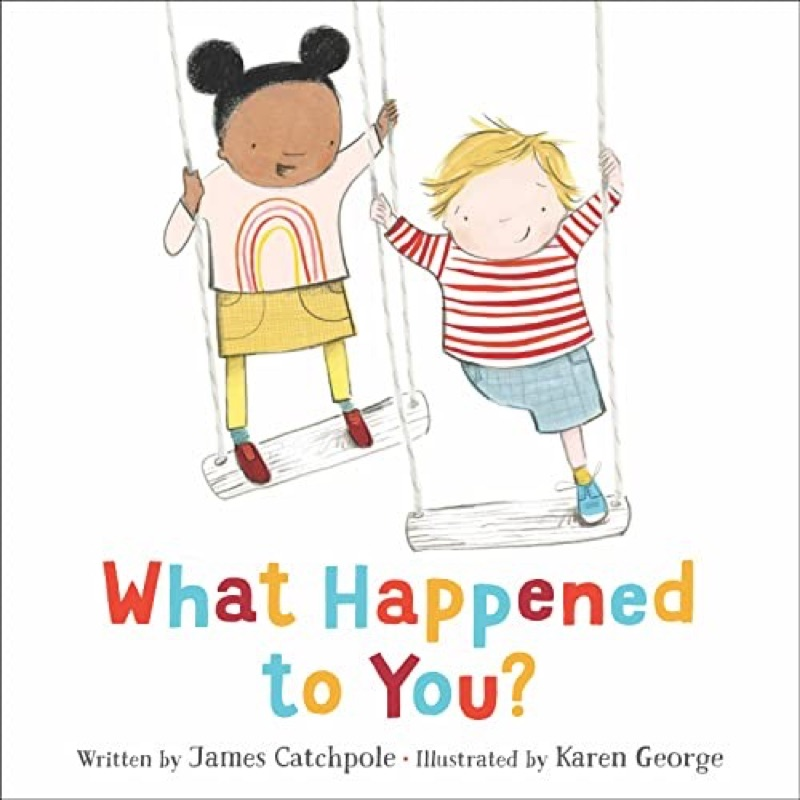
Written by a limb different author, this book explores what it’s like to be asked intrusive questions and how to build confidence. View on Amazon
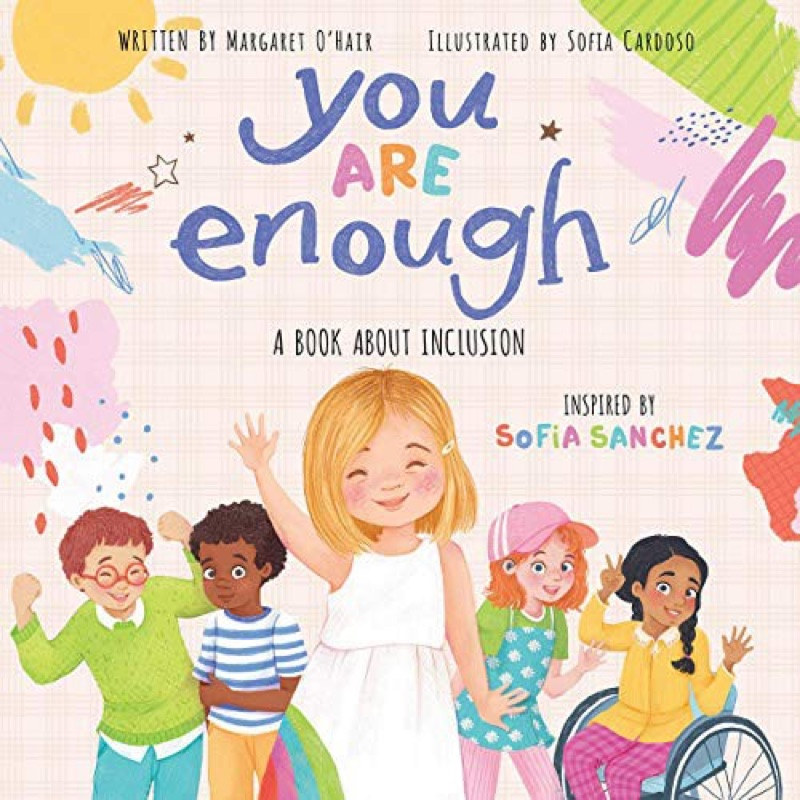
Inspired by Sofia Sanchez, this book is about inclusion, kindness, and embracing who you are. View on Amazon
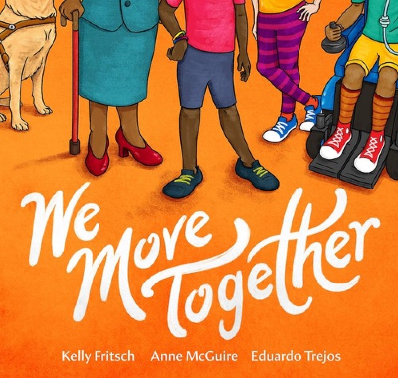
A story about disability justice, accessibility, and building inclusive communities together. View on Amazon
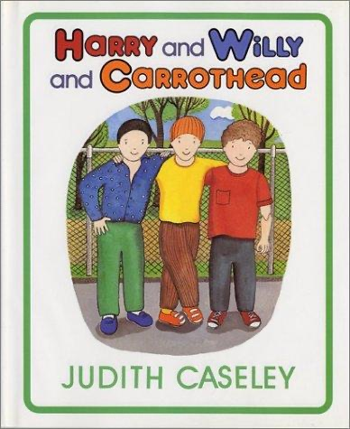
Harry was born without his left hand and uses a prosthesis. At school he answers questions, plays baseball, and makes friends. A straightforward look at everyday life with a limb difference. View on AbeBooks
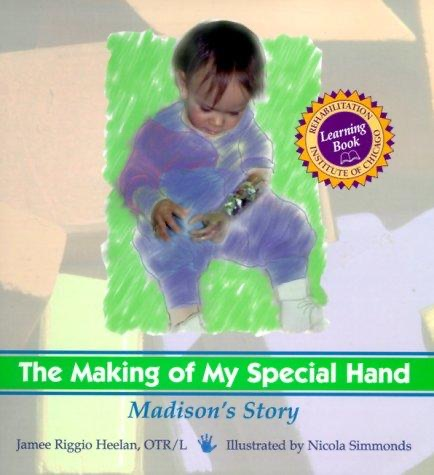
Madison was born without her left hand, and this true story follows her through getting a prosthetic hand made and fitted. Helpful if your child is curious about that process. View on Peachtree
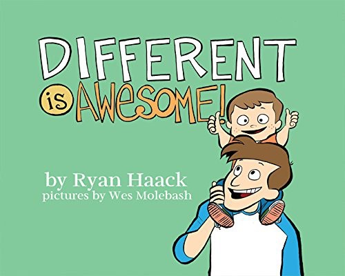
A boy brings his older brother Ryan, who was born with one hand, to school for show-and-tell. The class asks how Ryan does everyday things and learns he can do the same things they can, just in his own way. View on Amazon
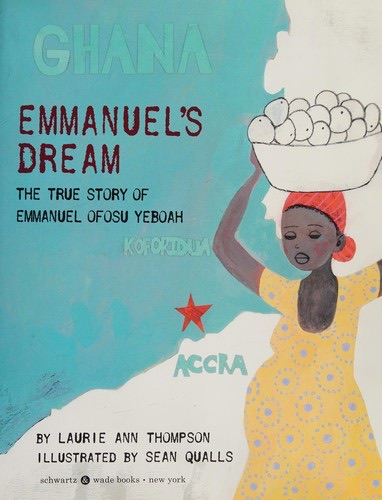
The true story of Emmanuel Ofosu Yeboah, born in Ghana with one fully working leg. He rode a bicycle across Ghana to speak up for people with disabilities. View on Penguin Random House
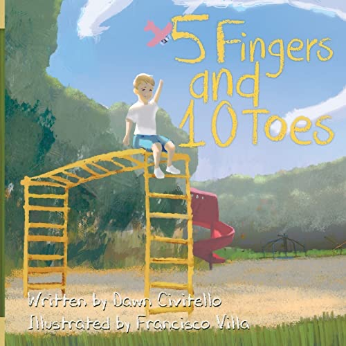
Jo-Jo is missing his left hand, and this simple story helps young kids understand limb difference and that it does not change someone’s worth. View on Amazon
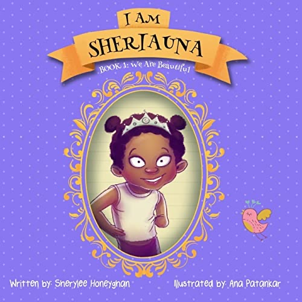
Written by her mom, this book introduces Sheriauna as funny, smart, and confident, with a limb difference that’s just one part of who she is. View on Amazon
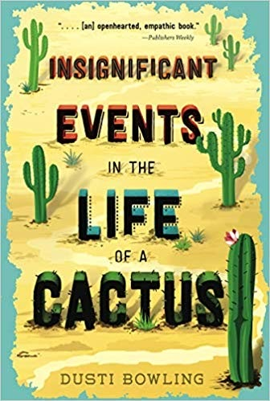
A middle-grade novel about Aven, who was born without arms. She moves to a new town, makes friends, and solves a mystery. Her limb difference is part of her life, not the whole story. View on Hachette
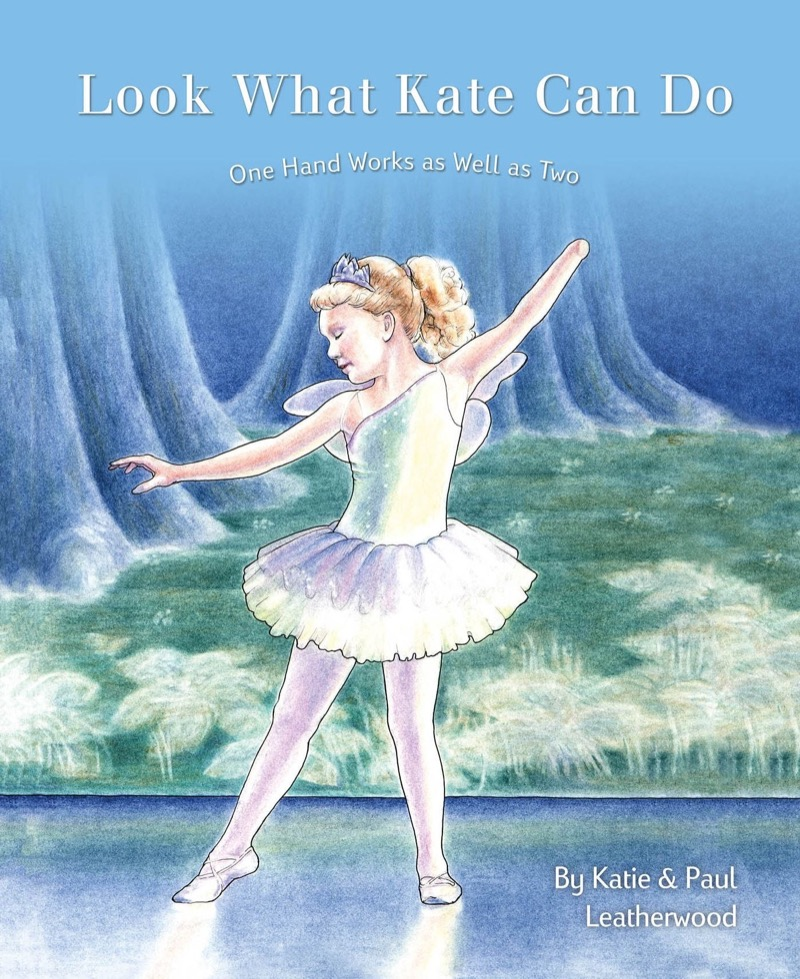
Kate was born with an upper limb difference and tells readers, in her own voice, how she does everyday things and answers questions. View on Barnes & Noble
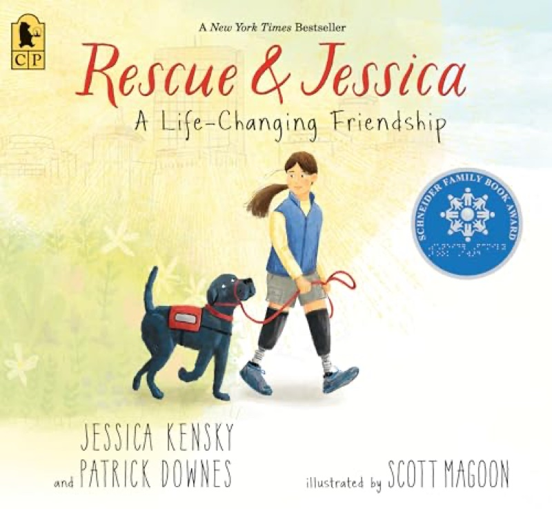
Based on a true story after the Boston Marathon bombing. Jessica is adjusting to limb loss, and Rescue is a service dog learning his new job. Together they figure out daily life one step at a time. View on Candlewick
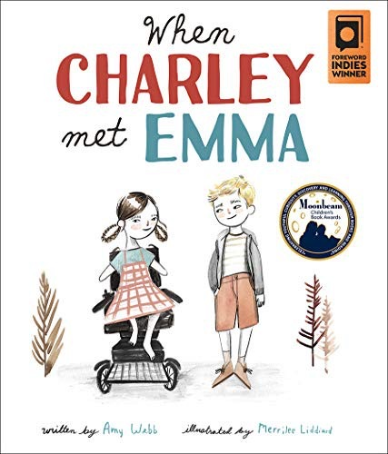
Charley feels unsure when he meets Emma, who has limb differences and uses a wheelchair. Once they talk, he learns her interests and that difference is not something to fear. View on Amazon
Jordan Reeves shares growing up with an upper limb difference, inventing adaptations (including a glitter-shooting prosthetic idea), and speaking up for other kids. Good for older elementary and middle-grade readers. View on Simon & Schuster
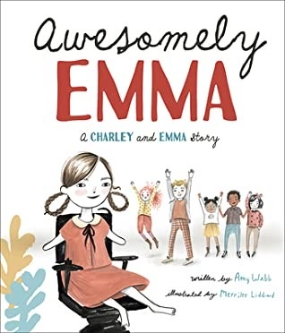
On a class trip, Emma runs into access barriers and a friend who tries to help the wrong way. She speaks up for what she needs and shows that good intentions still need listening. View on Amazon
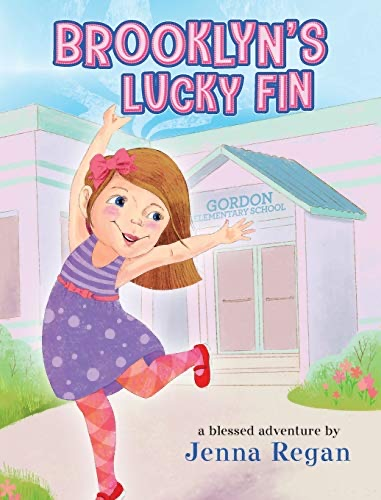
Brooklyn calls her limb difference her “lucky fin.” A cheerful story about confidence and the idea that kids can have visible or invisible differences and still share a lot in common. View on Amazon
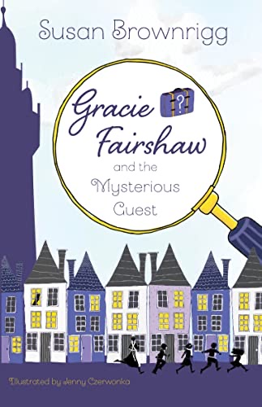
A middle-grade mystery set in 1930s Blackpool. Gracie has an upper limb difference and leads the investigation. Disability is part of her character, not the puzzle to solve. View on Amazon
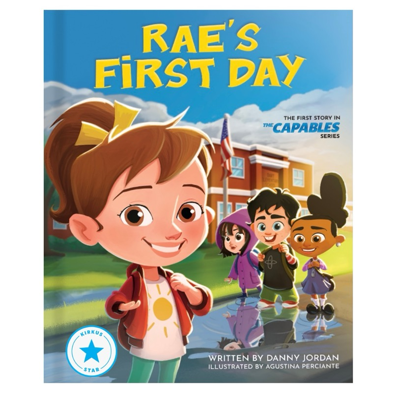
Rae is nervous about starting school and how kids might react to her prosthesis. The story follows ordinary first-day worries alongside friendship and what she can do. View on Amazon
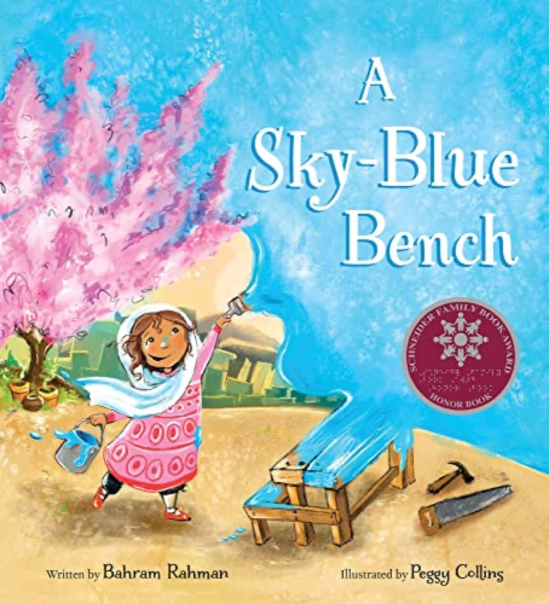
After losing part of her leg, Aria returns to school in Afghanistan and finds sitting on the floor hard. She builds a bench from scrap materials, and that change helps more than just her. View on Amazon
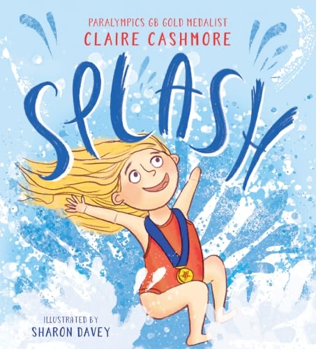
Based on Paralympic swimmer Claire Cashmore’s life. Young Claire was born without her left forearm and is scared of the water, until she tries a little at a time and finds her confidence. View on Amazon
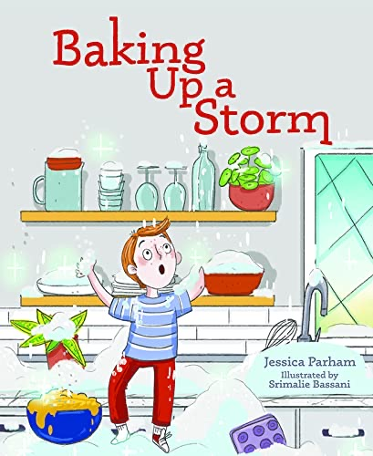
A boy without a left hand wants to bake on his own. He works through the practical parts of cooking and shares what he makes. Everyday representation, not a medical story. View on Amazon
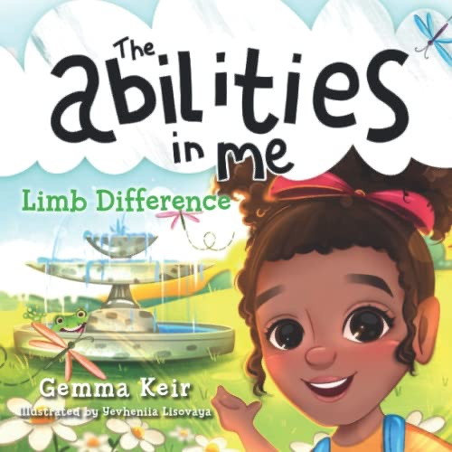
Part of an educational series. It introduces a child with a limb difference and talks about daily life, feelings, and adaptations in plain language for younger kids. View on Amazon
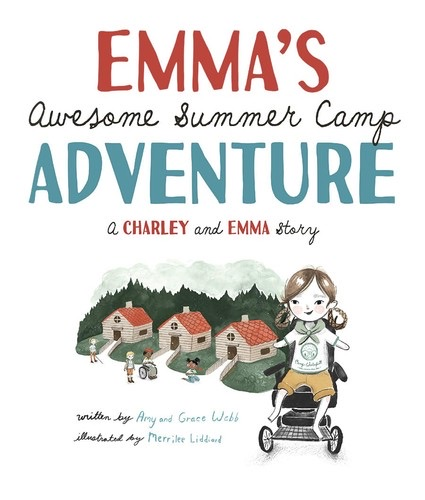
Emma goes to an inclusive summer camp where kids with different bodies and abilities can join in. A nice look at access as something that opens doors to adventure. View on Amazon
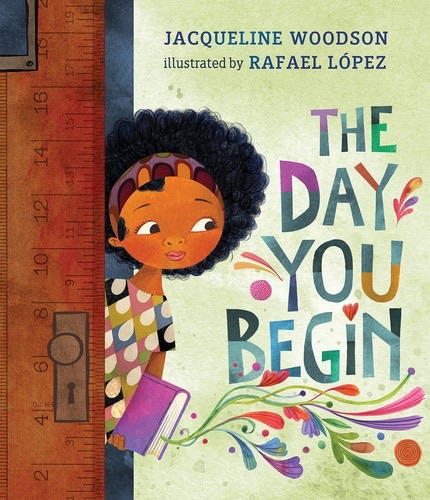
About the lonely feeling of walking into a room where no one seems to share your story, and how sharing a little of yourself can open a connection. View on Penguin Random House
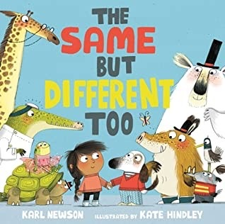
Animal characters compare how they look, move, and live, then notice what they share. Simple for very young kids learning that difference and sameness can both be true. View on Candlewick
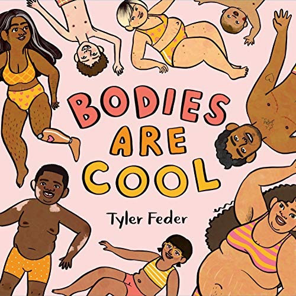
A lively celebration of bodies of many shapes, sizes, colors, and abilities, including mobility devices. Difference is shown as ordinary, not something to whisper about. View on Penguin Random House